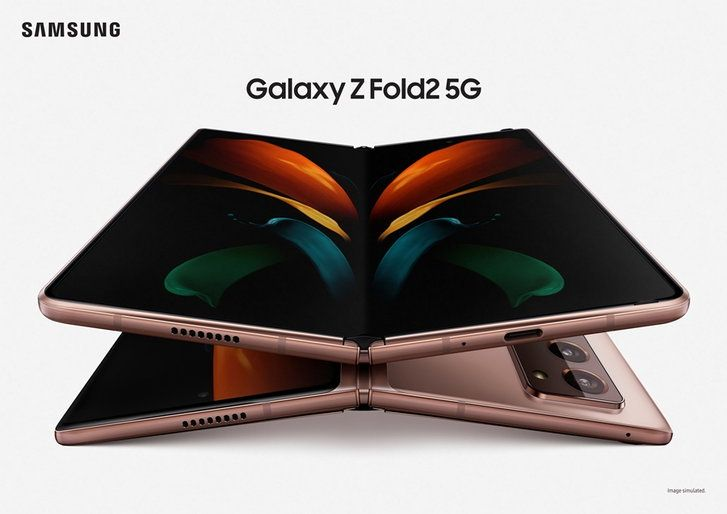
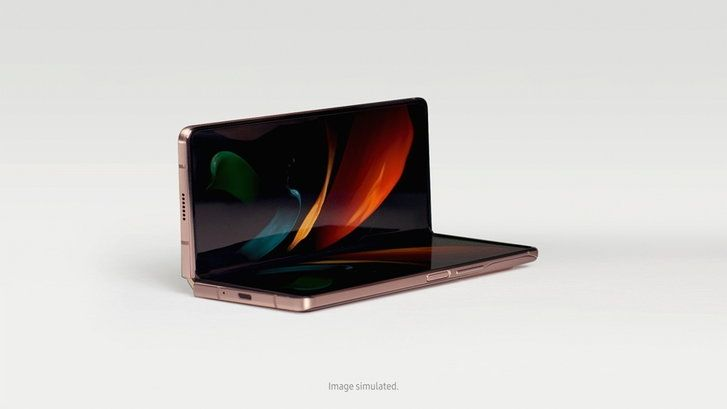
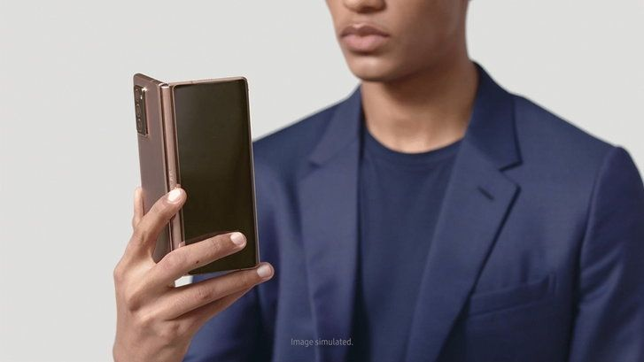
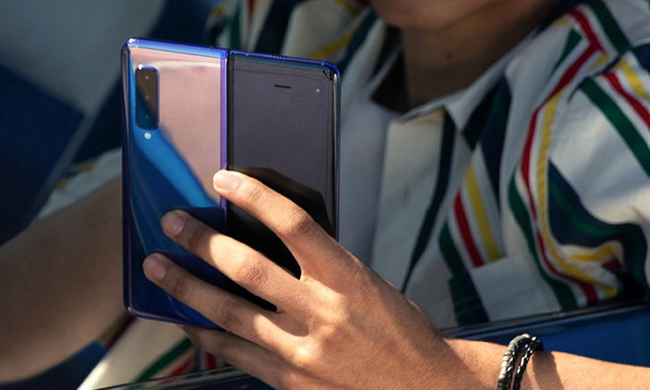
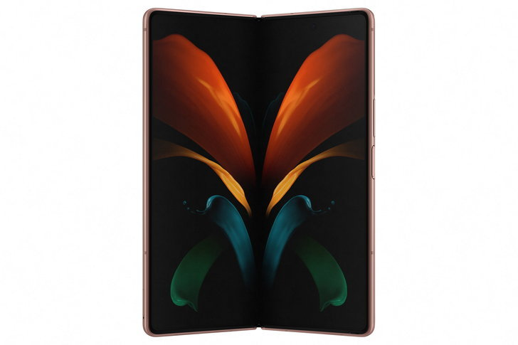
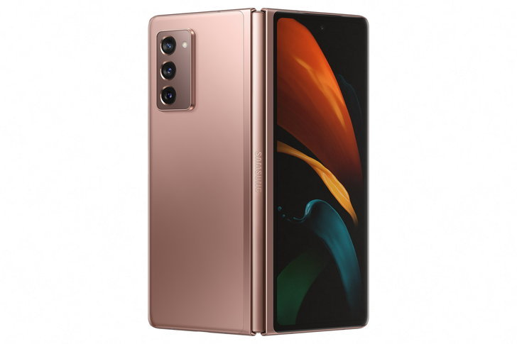
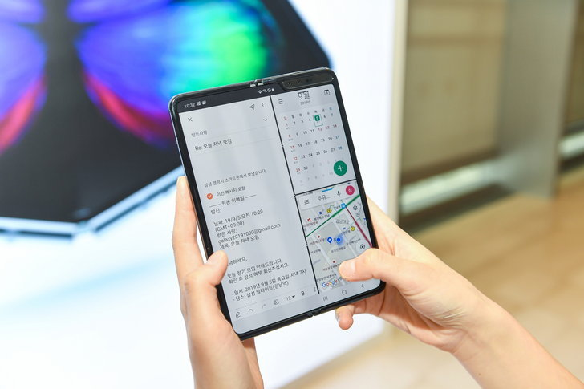

ซัมซุงเปิดตัว Galaxy Z Fold2 5G สมาร์ทโฟนหน้าจอพับได้ ดีไซน์สวยล้ำเข้ากับเทคโนโลยีขั้นสูง
ซัมซุงเปิดตัว Galaxy Z Fold2 5G สุดยอดนวัตกรรมพลิกโฉมโลกอนาคต สมาร์ทโฟนหน้าจอพับได้เจเนอเรชันที่ 3 จากซัมซุง ผสานดีไซน์สวยล้ำเข้ากับเทคโนโลยีขั้นสูง เพื่อมอบที่สุดของประสบการณ์สมาร์ทโฟนรูปแบบใหม่
ซัมซุง อิเลคโทรนิคส์ ผู้นำด้านนวัตกรรมและเทคโนโลยีระดับโลก เปิดตัว “Galaxy Z Fold2 5G” (กาแลคซี่ ซี โฟลด์ 2 5G) สมาร์ทโฟนหน้าจอพับได้เจเนอเรชันที่ 3 จากซัมซุง สุดยอดแห่งนวัตกรรมที่รวมเทคโนโลยีของสมาร์ทโฟนและแท็บเล็ตไว้ในเครื่องเดียว พร้อมดีไซน์แห่งอนาคต ที่ผ่านการต่อยอดและพัฒนาขึ้นเพื่อส่งมอบประสิทธิภาพที่ดีที่สุดและตอบโจทย์ไลฟ์สไตล์การใช้งานที่หลากหลาย
ด้วยจอแสดงผลที่มีขนาดใหญ่ขึ้น ทั้งจอด้านหน้าและจอหลักด้านใน แต่ยังคงความสะดวกในการพกพา พร้อมฟีเจอร์ใหม่ๆ เพื่อมอบประสบการณ์อันเป็นเอกลักษณ์บนนวัตกรรมที่ดีที่สุดจากซัมซุง
“บนเส้นทางก่อนจะมาเป็นสมาร์ทโฟนแห่งอนาคตนั้น ต้องอาศัยความคิดสร้างสรรค์และนวัตกรรมขั้นสูง ซึ่งการเปิดตัว Galaxy Z Fold2 5G ในครั้งนี้ เราได้รับฟังความคิดเห็นของผู้บริโภคอย่างใกล้ชิด เพื่อนำมาพัฒนาทั้งในด้านของฮาร์ดแวร์และด้านประสบการณ์การใช้งานจริง อีกทั้งการจับมือกับพันธมิตรชั้นนำในอุตสาหกรรมอย่าง Google และ Microsoft ได้ช่วยเสริมความแข็งแกร่งให้กับซัมซุง พร้อมต่อยอดศักยภาพและปฏิวัติความเป็นไปได้ใหม่ๆ ให้กับวงการสมาร์ทโฟน” ดร. ทีเอ็ม โรห์ ประธานฝ่าย โมบายล์ คอมมูนิเคชัน บริษัท ซัมซุง อิเลคโทรนิคส์ จำกัด กล่าว
ดีไซน์โฉมใหม่ ผสานเทคโนโลยีสุดล้ำ
ประสบการณ์รับชมคอนเทนต์ที่สมบูรณ์แบบ เมื่อพับเครื่อง ใช้งานสมาร์ทโฟนได้เต็มจอบนจอแสดงผลด้านหน้าแบบ Infinity-O ขนาด 2 นิ้ว ตอบโจทย์ทุกการใช้งานได้โดยไม่ต้องกางเครื่องออก ไม่ว่าจะเช็คอีเมล ค้นหาเส้นทาง หรือดูซีรีส์เรื่องโปรด และเมื่อกางเครื่องออกจะพบกับหน้าจอหลักขนาดใหญ่ 7.6 นิ้ว เทียบเท่าแท็บเล็ต รองรับการใช้งานแบบ Multi-tasking พร้อมรับชมคอนเทนต์ได้เต็มอรรถรส ด้วยขอบจอที่บางลง และรูกล้องขนาดเล็ก ไร้รอยบากลดสิ่งรบกวนสายตา พร้อมรองรับค่ารีเฟรชเรทสูงสุดถึง120Hz เพื่อการรับชมที่ลื่นไหลไม่มีสะดุด นอกจากนี้ Galaxy Z Fold2 ยังมาพร้อมกับระบบเสียงไดนามิกที่ดีที่สุดบนสมาร์ทดีไวซ์ในตระกูลกาแลคซี่ และลำโพงคู่ไดนามิกสูง มอบเอฟเฟกต์สเตอริโอและคุณภาพเสียงที่ชัดสมจริง
นวัตกรรมการออกแบบที่เหนือชั้น: Galaxy Z Fold2 5G มาพร้อมดีไซน์โฉมใหม่ที่มีความเพรียวบางและเป็น หนึ่งเดียว หน้าจอหลักทำจาก Ultra Thin Glass หรือนวัตกรรมแผ่นกระจกที่สามารถโค้งงอได้ มอบสัมผัสที่หรูหรา พรีเมียมยิ่งขึ้น
ยกระดับประสบการณ์ของ Flex Mode: นวัตกรรมบานพับ Hideaway Hinge หนึ่งเดียวจากซัมซุง คือหัวใจหลักที่เชื่อมทุกส่วนของสมาร์ทโฟนเครื่องนี้เข้าด้วยกัน ประกอบไปด้วยกลไก CAM mechanism ที่ทำให้สามารถกางเครื่องออกได้หลายองศาเพื่อตั้งใช้งานบนพื้นราบแบบHands-free ได้อย่างอิสระ นอกจากนี้ บริเวณระหว่างบานพับและตัวเครื่องยังประกอบไปด้วย Sweeper Technology หรือนวัตกรรมเส้นใยไฟเบอร์ขนาดเล็กที่ทำหน้าที่ป้องกันฝุ่นและสิ่งแปลกปลอมไม่ให้เข้าไปในตัวเครื่อง ซึ่งใน Galaxy Z Fold2 5G ซัมซุงได้พัฒนาเส้นใยไฟเบอร์ให้มีขนาดเล็กลง แต่ยังคงประสิทธิภาพในการป้องกันสิ่งแปลกปลอมอย่างเต็มที่
Customize สีบานพับของตัวเครื่องได้: สำหรับผู้ที่ต้องการความโดดเด่นไปอีกขั้น ซัมซุงมีบริการสุดเอ๊กซ์คลูซีฟสามารถสั่งทำ Galaxy Z Fold2 5G แบบพิเศษเฉพาะตัว เลือกสีบานพับของตัวเครื่องเองได้ ได้แก่ สี Metallic Silver, Metallic Gold, Metallic Red และ Metallic Blue
ประสบการณ์ถ่ายภาพรูปแบบใหม่ ตอบโจทย์ได้ทุกความต้องการ
Form Factor พับได้ของ Galaxy Z Fold2 5G ได้ปลดล็อครูปแบบการใช้งานที่แปลกใหม่มากมาย ซึ่งซัมซุงได้ยกระดับประสบการณ์นี้ไปอีกขั้นด้วยการผสานการทำงานของ Flex mode และ App Continuity เข้าด้วยกัน เพื่อช่วยเพิ่มความต่อเนื่องและอิสระในการใช้งานระหว่างสองหน้าจอ
ฟังก์ชันถ่ายภาพที่สะดวกและคล่องตัวกว่าที่เคย: ผู้ใช้สามารถถ่ายภาพและมองเห็นภาพที่ถ่ายได้ในเวลาเดียวกันไม่ต้องสลับโหมดถ่ายภาพและ Gallery ไปมาด้วยฟีเจอร์ Capture View Mode ที่จะแสดงภาพหรือวิดีโอที่ถ่ายไปล่าสุดถึง 5 ภาพบริเวณจอด้านล่าง ในขณะที่ยังใช้งานโหมดกล้องที่จอด้านบน นอกจากนี้ยังมีฟีเจอร์ Auto Framing ที่สามารถจับโฟกัสบุคคลหรือวัตถุในเฟรมขณะที่เคลื่อนไหวระหว่างการถ่ายวิดีโอในโหมด Hands-free ได้โดยอัตโนมัติ ช่วยให้คุณมั่นใจได้ว่าคุณจะเป็นจุดโฟกัสในวิดีโออยู่เสมอ
ครีเอทช็อตถ่ายภาพได้ตามต้องการ: Form Factor ของ Galaxy Z Fold2 5G ช่วยให้การถ่ายภาพเป็นเรื่องสนุก และตอบโจทย์กว่าเดิม ด้วยฟีเจอร์ Dual Preview ช่วยให้คุณได้ภาพที่ถูกใจ โดยผู้ที่ถูกถ่ายสามารถมองเห็นตัวเองในหน้าจอด้านนอกและจัดท่าทางที่ต้องการได้ในขณะที่จะถ่าย ในขณะผู้ถ่ายสามารถจัดองค์ประกอบของภาพโดยการมองจากหน้าจอหลักด้านในได้เวลาเดียวกัน นอกจากนี้ Rear Camera Selfie ยังให้คุณถ่ายเซลฟี่ความละเอียดสูงด้วยกล้องหลังก็ได้อย่างง่ายดายเช่นกัน
กล้องถ่ายภาพระดับโปร – Galaxy Z Fold2 5G มาพร้อมกล้องระดับโปร 5 ตัว พร้อมฟีเจอร์การถ่ายภาพแบบ มืออาชีพ ไม่ว่าจะเป็น Pro Video mode, Single Take, Bright Night และ Night Mode
ซัมซุงเตรียมเผยสุดยอดสมาร์ทโฟนแห่งอนาคต “Galaxy Z Fold2” อย่างเต็มรูปแบบในเดือนกันยายนนี้
เมื่อเร็วๆ นี้ ซัมซุงได้ตอกย้ำความเป็นผู้นำด้านนวัตกรรมและเทคโนโลยีระดับโลกอีกครั้ง ด้วยการเปิดตัว Galaxy Z Fold2 (กาแลคซี่ ซี โฟลด์ 2) สุดยอดนวัตกรรมสมาร์ทโฟนจอพับได้เจเนอเรชันที่ 3 จากซัมซุง ที่มาพร้อมนวัตกรรมการออกแบบสุดล้ำบ่งบอกนิยามแห่งอนาคต พร้อมพัฒนาฟังก์ชันใหม่ๆ เพื่อตอบโจทย์การใช้งานและมอบประสบการณ์ของสมาร์ทโฟนจอพับได้ที่ดีที่สุด
เทรนด์การทำงานแบบ Remote Working นั้นกำลังเติบโตแบบก้าวกระโดด สอดคล้องกับรายงานของ Microsoft ที่เผยว่า ในช่วงเดือนกุมภาพันธ์ - มีนาคมที่ผ่านมา อัตราการใช้บริการวิดีโอคอลบน Microsoft Teams ผ่านสมาร์ทโฟนและแท็บเล็ตนั้นเพิ่มสูงขึ้นถึง 300%
ซัมซุงได้เล็งเห็นถึงเทรนด์ของไลฟ์สไตล์การทำงานที่เปลี่ยนไปนี้ จึงมุ่งต่อยอดนวัตกรรมสมาร์ทโฟนจอพับได้อย่างต่อเนื่อง ด้วยคอนเซ็ปต์การรวมประสบการณ์หน้าจอขนาดใหญ่ของแท็บเล็ตและความคล่องตัวของสมาร์ทโฟนไว้ในเครื่องเดียว กลายเป็นผู้บุกเบิกและปฏิวัติอุตสาหกรรมด้วยการสร้าง Form Factor ใหม่ให้กับสมาร์ทโฟนในอนาคต
หลังจากที่ซัมซุงได้เปิดตัว Galaxy Fold “สมาร์ทโฟนจอพับได้รุ่นแรกของโลก” ไปเมื่อปีที่ผ่านมา ได้พิสูจน์แล้วว่านวัตกรรมดังกล่าวไม่ได้ถูกคิดค้นขึ้นเพียงเพื่อสร้างลูกเล่นที่แปลกใหม่ หรือให้ประสบการณ์สมาร์ทโฟนรูปแบบใหม่ที่ไม่เคยมีมาก่อนเท่านั้น แต่นวัตกรรมที่ผสานเทคโนโลยีสมาร์ทโฟนและแท็บเล็ตในเครื่องเดียวนี้ถูกพัฒนาขึ้นเพื่อตอบโจทย์ความต้องการและเพิ่มประสิทธิภาพการใช้งานให้กับผู้บริโภคได้อย่างแท้จริง
โดยเฉพาะฟีเจอร์ Multi-active window ที่ช่วยให้สามารถทำงานได้หลายอย่างพร้อมกัน หรือประสบการณ์การรับชมที่เต็มตาบนหน้าจอสมาร์ทโฟนขนาดใหญ่เทียบเท่าแท็บเล็ต แต่ยังให้ความสะดวกในการพกพาและคล่องตัวในการใช้งาน ผลสำรวจพบว่า 70% ของผู้ใช้ Galaxy Fold ลดความถี่ในการใช้แท็บเล็ตในชีวิตประจำวันแล้วหันมาใช้สมาร์ทโฟนจอพับได้เครื่องนี้แทน และผู้ใช้งานกว่า 40% นิยมใช้งานฟีเจอร์ Multi-active window ซึ่งมากกว่าสมาร์ทโฟนแฟลกชิปในรุ่นอื่นๆ ของซัมซุง
ความสำเร็จของสมาร์ทโฟนจอพับได้รุ่นก่อนๆ อย่างซัมซุง Galaxy Fold และ Galaxy Z Flip ในหลายประเทศทั่วโลก รวมถึงประเทศไทย สะท้อนให้เห็นถึงความเชื่อมั่นและความพร้อมของผู้บริโภคต่อการเปิดรับเทคโนโลยีใหม่ๆ ที่เข้ามา
ซึ่งในครั้งนี้ ซัมซุงก็ได้สร้างบรรทัดฐานใหม่ให้กับวงการอีกครั้ง ด้วยการเตรียมเปิดตัวสมาร์ทโฟนจอพับได้รุ่นล่าสุด Galaxy Z Fold2 สุดยอดนวัตกรรมที่ผ่านการพัฒนาทั้งด้านดีไซน์และฟังก์ชันการใช้งานเพื่อตอบโจทย์ความต้องการของผู้ใช้งานอย่างแท้จริง ซึ่งความพิเศษของรุ่นนี้จะเป็นอย่างไร สามารถติดตามการเปิดตัวและการวางจำหน่ายอย่างเป็นทางการได้พร้อมกันในเดือนกันยายนนี้